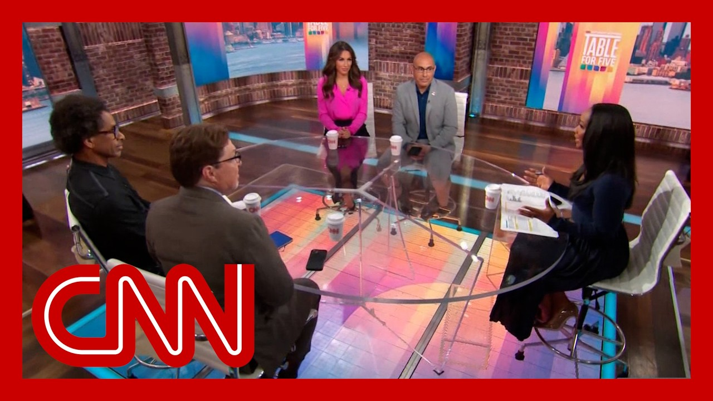

【“你拿的是卡塔尔的‘血钱’”：格里芬谈特朗普收受私人飞机引发的争议】
Summary: The backlash over Trump accepting a luxury jet from Qatar, a nation he once accused of funding terrorism, highlights ethical and legal concerns, with critics calling it corruption despite his defense.
摘要： 特朗普收受卡塔尔豪华私人飞机引发争议，他曾指责该国资助恐怖主义，此举被批评人士视为腐败，尽管他本人辩称拒绝礼物才是愚蠢的。

⏱️ Estimated Reading Time: 16 min
Good morning.
早上好。
I'm Abby Phillip in New York.
我是身在纽约的艾比·菲利普。
If you wave at the camera while shoplifting, is it a crime?
如果一边行窃一边对摄像头挥手，这算犯罪吗？
In MAGA world, Apparently not.
在“让美国再次伟大”的世界里，显然不算。
That observation from journalist Dave Weigel defines Trump's.
记者戴夫·韦格尔的这番观察定义了特朗普的风格。
For a week after a trip filled with diplomatic progress, it was instead dominated by the president accepting a free luxury jet from Qatar, a nation that he once called funders of terror.
尽管出访取得外交进展，但随后一周的焦点却是总统收受卡塔尔赠送的豪华私人飞机，而他曾称该国为恐怖主义资助者。
Trump says that only stupid people would reject such a gift, but those people include many members of his own party.
特朗普称只有蠢人才会拒绝这种礼物，但这些“蠢人”包括他党内的许多成员。
Heck, the 2016 version of Donald Trump, thought that as well.
见鬼，2016年的唐纳德·特朗普也是这么想的。
As Saudi Arabia giving $25 million, Qatar, all of these countries, you talk about women and women's rights.
沙特给2500万美元，卡塔尔，所有这些国家，你谈论女性和女性权利。
So these are people that push gays off business, off buildings.
这些人会把同性恋者推下高楼。
These are people that kill women and treat women horribly.
这些人杀害女性并残酷对待女性。
And yet you take their money.
然而你却收他们的钱。
My goal is to keep foreign money out of American politics.
我的目标是阻止外国资金介入美国政治。
Hillary Clinton's goal is to put the Oval Office up for sale to whatever country offers the highest price.
希拉里·克林顿的目标是把椭圆形办公室卖给出价最高的国家。
Now, this is hardly the only action that's blurring the ethical, legal and moral lines of a presidency.
这远非唯一模糊总统职位伦理、法律和道德界限的行为。
His crypto ventures, his meme coin and private dinners, his son's billion dollar deals with nations the U.S. does business with.
他的加密货币投资、他的迷因币和私人晚宴、他儿子与美国有业务往来的国家达成的数十亿美元交易。
And yet the Speaker of the House says, if you can see it, it's all good.
然而众议院议长却说，只要你能看到，就都没问题。
The reason that many people refer to the Bidens as the Biden crime family is because they were doing all this stuff behind curtains, but in the back rooms, they were trying to conceal it.
许多人称拜登家族为“拜登犯罪家族”，是因为他们暗中行事，试图在幕后掩盖。
President Trump is doing his out in the open.
特朗普总统却公开行事。
They're not trying to conceal anything.
他们毫不掩饰。
I don't know anything about the meme coin thing.
我对迷因币一无所知。
I don't know, I can just tell you that.
我不知道，我只能这么告诉你。
I mean, President Trump has had nothing to hide.
我是说，特朗普总统没什么可隐瞒的。
I love the kind of two sides of the coin here.
我喜欢这种硬币的两面性。
For Republicans.
对共和党人来说。
It's always I don't know anything about that, but I can just tell you that they're being extremely transparent.
总是“我对此一无所知，但我可以告诉你他们非常透明”。
I don't know, is transparency the antidote to corruption?
我不知道，透明是腐败的解药吗？
Can I just go back a second?
我能稍微回溯一下吗？
The follow up question there is, are you saying that what he is doing right now in the open, like are we are we listening to the same thing like you just admitted that he's doing it in the open, so it's okay to do it in the open.
接下来的问题是，你是说他现在公开做的事——我们听到的是同一件事吗？你刚承认他公开行事，所以公开做就没问题？
It's still screams of impropriety.
这仍然充满不当。
Smells of it.
散发着这种气息。
Right.
对。
So the follow up question has to be a lot more rigorous.
所以后续问题必须更严格。
But I do agree with what you're saying.
但我同意你说的。
Republicans have been getting asked this a bunch now, and everyone's has to go back to their talking points about the jet he is flying on an older White House plane, yet that's conflating two different things.
共和党人现在频频被问及此事，每个人都得回到他们的说辞——说他乘坐的是旧的白宫飞机，但这混淆了两件事。
We can talk about the plane separately, but right now he would be receiving a gift and it would scream of impropriety.
我们可以分开讨论飞机问题，但现在他是在收受礼物，这显然不当。
And also, as other law enforcement officials have said, they'd have to sweep the plane.
而且，正如其他执法官员所说，他们得检查那架飞机。
There could be something underneath.
可能藏有东西。
We keep coming back to this sort of divide.
我们不断回到这种分歧。
This is not an ideological issue.
这不是意识形态问题。
There's no reason why the right or Republicans should be like, this is fine.
右翼或共和党人没理由觉得这没问题。
This is clear corruption.
这是明显的腐败。
This is emoluments.
这是薪酬条款禁止的行为。
This is against the Constitution.
这违反宪法。
This is just the process of running government.
这只是政府运作的过程。
And it's like the due process issue, which is also not ideological.
就像正当程序问题，这也不是意识形态问题。
The right should agree.
右翼应该同意。
We should use the courts before we throw people out of the country.
我们应该先通过法院程序，再驱逐人出境。
But we keep arguing about process and the right follows him.
但我们不断争论程序，而右翼追随他。
So they're like Trumpist and we're like pro constitution, pro-democracy, anti-fascism, just follow the Constitution.
所以他们像特朗普主义者，而我们支持宪法、民主、反法西斯，只遵循宪法。
This should not be an ideological issue.
这不该是意识形态问题。
Like this is where I have to say even Ben Shapiro, because even Ben Shapiro thinks that perhaps this may be crossed the line.
在这里我甚至得提本·夏皮罗，因为连他都认为这可能越界了。
Yes, I think inherently it is bad.
是的，我认为这本质上是坏事。
I do not think this is good.
我不认为这是好事。
I think if we switch the names to Hunter Biden and Joe Biden, we'd all be freaking out on the right.
如果把名字换成亨特·拜登和乔·拜登，我们右翼都会暴怒。
Let's say if Qatar was giving Joe a $400 million jet for his use at his presidential library after his presidency, or if Hunter wants a crypto firm with the son of Anthony Blinken and then launched a series of crypto products in which mysterious strangers, including foreigners, were investing all well, that crypto farm was being regulated by Joe's administration.
假设卡塔尔送给乔一架4亿美元的飞机供他总统图书馆使用，或者亨特想与安东尼·布林肯的儿子开加密货币公司，然后推出一系列有外国神秘人投资的产品，而这家加密公司还受乔的政府监管。
We'd all have been pretty upset on the right.
我们右翼都会非常愤怒。
I have nothing else to say, because I think that lays it out pretty clearly.
我无话可说，因为我觉得这已经很清楚了。
What we're talking, right?
我们在讨论什么，对吧？
I mean, listen, another element that you can't ignore in this is the Qatar is basically House Hamas, and they show their finances, which are used for international terrorism, which have been used to wage this war against Israel, one of our closest allies in the Middle East.
听着，另一个不能忽视的因素是卡塔尔基本上是哈马斯的大本营，他们的资金用于国际恐怖主义，用于对以色列——我们在中东最亲密盟友之一——发动战争。
So wait a step on your own message, Donald Trump.
所以等等，特朗普，你的信息自相矛盾。
You just got Edan Alexander, the last remaining American Israeli hostage back in the same day.
你刚在同一天救回了最后一名美国以色列人质埃丹·亚历山大。
You're taking Qatari blood money.
你却收受卡塔尔的“血钱”。
And the only way, the only way is to take the plane is if all the hostages are on it.
唯一接受那架飞机的理由只能是所有人质都在上面。
and, you know, I mean, I mean, the leadership of Hamas is three doors down, so.
而且哈马斯领导层就在附近。
But even when I was a White House official, we couldn't take a gift over $20.
但即使我担任白宫官员时，我们也不能接受超过20美元的礼物。
And even so, if it was, you had to report it to an ethics adviser, take an accounting of it.
即便如此，你还得向道德顾问报告并登记。
But we were also told, don't even take a pen from a foreign diplomat, a head of state because it likely has surveillance technology on it.
我们还被告知，连外国外交官或元首的钢笔都不能拿，因为可能装有监控技术。
What it's going to take to go through this Boeing 747 and take out anything that could be surveillance technology and pose a national security threat, it's going to cost so much money.
彻底检查这架波音747并移除任何可能构成国家安全威胁的监控技术，将耗费巨资。
Part of what we did this week also was normalize Hamas.
我们本周的部分行动还美化了哈马斯。
We negotiated with Hamas.
我们与哈马斯谈判。
The plane could be a gift for that.
飞机可能是对此的回报。
It's probably a gift for the business that he's doing there.
也可能是对他商业往来的回报。
But it could be a gift for that.
但也可能是前者的回报。
Qatar does fund Hamas, right?
卡塔尔确实资助哈马斯，对吧？
I mean, they would consider them a freedom fighter, right?
他们会认为哈马斯是自由战士，对吧？
Not.
不是。
But that's what they're not suggesting.
但他们没这么说。
It's a bad idea to have gotten Edan Alexander out of--
救回埃丹·亚历山大是坏主意吗？
No.
不。
Of course.
当然不是。
No.
不。
Of course, in that specific part of this is a good idea.
当然，这部分是好事。
But we don't negotiate with terrorists.
但我们不与恐怖分子谈判。
So if we Negotiate with them, then they are not.
如果我们谈判，他们就不是恐怖分子了。
Well, this.
这个嘛。
And I'm sure that Israel would not appreciate that conversation.
我相信以色列不会赞同这种说法。
Well, again, all I care about is do those hostages come home, back to their families and to the ones that have been killed, get to bury their remains in a dignified way.
重申一次，我只关心人质能否回家与亲人团聚，死者能否有尊严地下葬。
And I don't think the families care.
我认为家属们不在乎这些。
you know, also, we have to say that Donald Trump has made a pretty high priority of getting American hostages home more than Joe Biden did, more than Barack Obama did, more than he did in his first term.
还得说，特朗普比拜登、奥巴马乃至他自己第一任期更优先解救美国人质。
And I think we ought to give him credit for that.
我认为应该肯定这点。
But I have to say, to be honest, that's not factually accurate.
但老实说，这不符合事实。
Joe Biden brought a lot of Americans home, too.
拜登也解救了许多美国人。
And frankly, the people working on this are not people who are like stamping Rs and Ds next to their names.
坦率说，从事这项工作的人并不分党派。
okay, they're not doing it for partisan reasons.
他们不是出于党派原因。
And the president for this.
总统为此。
I just have to say it because I know some of these people I've talked to, a lot of them.
我必须说明，因为我认识其中许多人。
They are not partisan people.
他们无党无派。
They are people who are fighting.
他们是奋斗者。
But would.
但你会。
You agree?
同意吗？
He has prioritized it and he's had success.
他优先处理并取得成功。
He has prioritized it for, for for the people that he's brought back so far in his.
他优先解救目前已回国的人质。
Why can't we just say yes?
为什么不能简单肯定？
He's prioritized it.
他优先处理。
And I think that's.
我认为这。
What I'm saying is Joe Biden has brought a lot of Americans home, too.
我想说的是拜登也解救了许多美国人。
It's just that you didn't pay attention to it because it's.
只是你没注意。
Not a running score.
这不是比分。
Yeah, like it's not a tally.
对，这不是计分板。
Bring people back.
把人救回来。
Here's the thing.
问题是。
Okay?
好吗？
I have to say about this crypto thing, this crypto thing is a thousand times bigger and more significant than the plane.
必须说，加密货币问题比飞机问题严重千倍。
The plane is crazy and weird in a way, because Trump just likes nice things.
飞机事件疯狂又古怪，因为特朗普喜欢好东西。
But the crypto thing is a massive, you know, perhaps multi-billion dollar scheme to make tons of money for his family while he is in office, but he is actively participating in and nobody's saying a word.
但加密货币可能是数十亿美元的阴谋，为他家族在任期内敛财，而他积极参与却无人发声。
About what we're doing about it.
关于我们对此的作为。
But this is just give me money just because you like me, or you might have a chance to meet me or even tour the White House.
这只是“因为喜欢我或有机会见我甚至参观白宫就给我钱”。
This is completely inappropriate.
这完全不当。
This is selling the presidency and privatizing the presidency, making money off of being the president.
这是在出售总统职位，将总统职位私有化，靠总统身份赚钱。
You are not supposed to make money off And look.
你不该借此牟利。
Look at the hurdles that we're all doing right now, the mental gymnastics that we're all doing, even though we all are in agreement like that.
看看我们现在的纠结，尽管我们都同意这点。
This is wrong.
这是错的。
And so it's incumbent upon us as media, whether it be independent media or part of this network.
因此我们媒体——无论是独立媒体还是本网络——有责任。
We have to start asking the questions and framing them in the correct manner.
我们必须开始提问并以正确方式构建问题。
Mr. President, this is inappropriate.
总统先生，这不当。
As per as Terry said before, as per the laws of this land.
正如特里所说，根据本国法律。
Like, do you understand the impropriety here?
你明白这有多不当吗？
Do you understand that?
你明白吗？
Right.
对。
Like we have to.
我们必须。
Start that house.
开始整顿。
I mean.
我是说。
I don't think they get as.
我不认为他们。
A problem the media.
媒体的问题。
We are asking the question, the fire, the problem is the corruption and the unethical behavior.
我们在提问，但症结是腐败和不道德行为。
The question is, is about the the mechanisms of enforcing the law.
问题在于执法机制。
Right?
对吧？
So I mean, if Congress says, oh, nothing to see here, then there's not a whole lot left that people can do.
所以如果国会说“哦，这里没问题”，那人们就无能为力了。
And I'm just wondering, like, do you think at some point somebody has to say to the president, this has to stop, or is that just not going to happen?
我在想，是否该有人对总统说“必须停止”，还是说这不会发生？
And they're just going to pocket all of this money?
他们就这样中饱私囊？
Well, I think he's going to continue on with his private business in the way that his family has always done their private business.
我认为他会继续以家族一贯方式经营私人业务。
They're in the development business, for instance.
比如他们从事房地产开发。
I think that this they hold on, hold on.
我认为这——等等。
I think the.
我认为。
Crypto stuff is not real estate.
加密货币不是房地产。
I don't I don't think you I don't think you should do the meme coin.
我认为你不该搞迷因币。
But but I'm a critic of a lot of crypto cryptocurrencies.
但我本身批评许多加密货币。
I think the president, United States and the Congress, the United States, ought to be trying to promote the dollar as the store of value worldwide and not.
我认为美国总统和国会应推动美元作为全球价值储存手段，而非加密货币。
And I'm a crypto skeptic, so I'm certainly a skeptic of a meme coin by any, any, any celebrity, much less the president of United States.
我是加密货币怀疑者，自然更怀疑名人——尤其是美国总统——发行迷因币。
So I think that's a bad idea.
所以我认为这是坏主意。